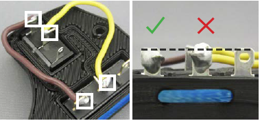
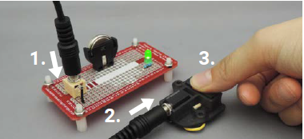

Solder Electronics
Step 1: Solder the wired connections
Using a soldering iron, solder the wired connections at the four indicated squares. Keep the tips of the terminals free of solder, as shown.

Step 2: Test the switch
Using a switch tester, test that the newly soldered switch works. Use the 3.5 mm mono cable to connect the mono jack to the switch tester, and press the small bump on the top of the limit switch. The LED on the switch tester should light up when you press the switch.
If the switch works as expected, skip the Troubleshooting section below.

Troubleshooting
If the switch does not work as expected, try these troubleshooting steps.
Issue: The LED does not turn on or is inconsistent (blinks or only sometimes turns on) when the limit switch is pressed.
- Check that the wires are connected to the correct terminals.

If the wires were connected incorrectly, remove the wires and connect them correctly, then solder them in place.
- Check that the soldered connections are secure. Gently pull on/twist the wires. They should not move at the solder joints.
If the wires move at the solder joints, use the soldering iron to reheat the joint. Make sure the wires and terminals (metal legs on the mono jack and limit switch) are both heated so solder connects them together.
Issue: The LED is always on when the switch is plugged in.
- Check if wires or solder are touching across the terminals of the mono jack and/or limit switch.
If wires are touching across terminals, you may trim excess wire. If solder is connecting two terminals together, remove the excess solder using a solder sucker or other tool.